Testes Funcionais/Sistema Caixa-Preta

| FGA 0238 Testes de Software - Turma 02 | Semestre | 2023.1 | |
| Nome | Nicolas Chagas Souza | Matrícula | 20/0042327 |
| Equipe | PassaNada | ||
Atividade 2 – Desenvolver Testes Funcionais/Sistema Caixa-Preta
Aplicação
A aplicação em teste é o TEAMMATES, que fornece funcionalidades para avaliação entre pares. Para utilizar o sistema, um instrutor deve solicitar uma conta na plataforma, em seguida, ele pode criar cursos, inscrever alunos nesses cursos, separados por grupos, e gerar sessões de avaliações por pares, onde cada integrante avalia a si mesmo e aos demais integrantes do grupo, por meio de questões definidas pelo instrutor.
Especificação da Funcionalidade
Requisitos
A funcionalidade testada é a de Criar Novos Cursos. Um instrutor pode criar zero ou mais cursos, cada qual com as seguintes informações:
- Identificação do Curso (obrigatório): Identificador do curso, na forma de texto, pode conter letras, números, pontos finais, hífenes, underlines e cifrões ($). Não pode se repetir, não pode ser maior do que 64 caracteres, não pode estar vazio, não pode conter espaços, deve possuir ao menos um símbolo alfanumérico.
- Nome do Curso (obrigatório): Deve começar com um caractere alfanumérico, possuir no máximo 80 caracteres, não pode conter barras verticais (|) ou símbolos de porcentagem (%).
- Instituição do Curso (obrigatório): Deve ser uma das instituições do instrutor.
- Fuso Horário (obrigatório): Deve ser um fuso horário válido.
Capturas de Tela
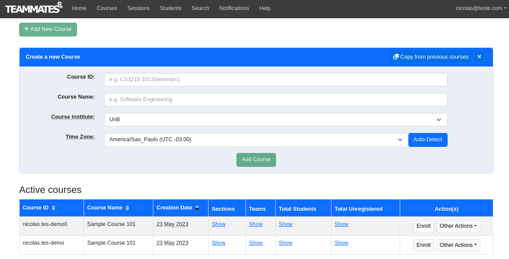
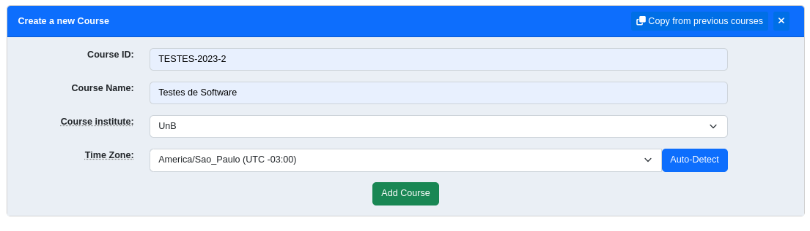
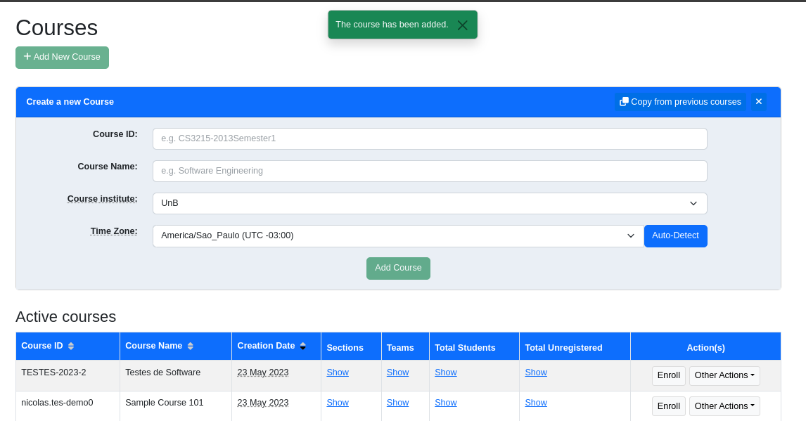
Condições de Entrada e de Saída
Classes de Equivalência
A partir da especificação da funcionalidade foram identificadas as seguintes classes de equivalência.
| Variável | Classes Válidas | Classes Inválidas |
|---|---|---|
| Course ID |
|
|
| Course name |
|
|
| Course Institute |
|
|
| Time Zone |
Legenda:
numeração das classes válidas: numeração das classes inválidas:
Análise de Valor Limite
A técnica de Análise de Valor Limite foi aplicada para determinar os limites válidos e inválidos para os intervalos numéricos, no caso o tamanho dos identificadores e nomes dos cursos.
| Variável | Limite Inferior Inválido | Limite Inferior Válido | Limite Superior Válido | Limite Superior Inválido |
|---|---|---|---|---|
| Course ID (tamanho) | 0 | 1 | 64 | 65 |
| Course name (tamanho) | 0 | 1 | 80 | 81 |
Especificação dos Casos de Teste
Todos os casos de teste levam em consideração um instrutor cadastrado nas instituições 'UnB e FGA' com o curso com ID "TESTE" já cadastrado. No sistema está cadastrada, para outro instrutor, a instituição Anhanguera.
| Casos de Teste | Classes Contempladas | Dados de Entrada | Saída Esperada | |||
|---|---|---|---|---|---|---|
| Course ID | Course Name | Course Institute | Timezone | |||
| |
|
Testes-De-Software_T02-2023-Universidade.De.Brasilia$2023--01-TM (64 caracteres) |
abcd efghijklm nopqrstuvwxy zABCDEFGHIJKLMNOPQRSTUVWXYZ@\#$&*()+\/?![]{}-_ ªº""'' (80 caracteres) |
UnB | America/Sao_Paulo (UTC -3) | Curso criado. |
| |
|
(0 caracteres) | Curso de Teste | UnB | America/Sao_Paulo (UTC -3) | Curso não criado. |
| |
|
Testes-De-Software_T02-2023-Universidade.De.Brasília$2023--01-TMS (65 caracteres) | Curso de Teste | UnB | America/Sao_Paulo (UTC -3) | Curso não criado. |
| |
|
Testes deSoftware | Curso de Teste | UnB | America/Sao_Paulo (UTC -3) | Curso não criado. |
| |
|
$_-. | Curso de Teste | UnB | America/Sao_Paulo (UTC -3) | Curso não criado. |
| |
|
TESTE | Curso de Teste | UnB | America/Sao_Paulo (UTC -3) | Curso não criado. |
| |
|
TestesDeSoftware | Curso d|e Teste | UnB | America/Sao_Paulo (UTC -3) | Curso não criado. |
| |
|
TestesDeSoftware | Curso d%e Teste | UnB | America/Sao_Paulo (UTC -3) | Curso não criado. |
| |
|
TestesDeSoftware | (0 caracteres) | UnB | America/Sao_Paulo (UTC -3) | Curso não criado. |
| |
|
TestesDeSoftware | abcd efghijklm nopqrstuvwxy zABCDEFGHIJKLMNOPQRSTUVWXYdZ@\#$&*()+\/?![]{}-_ ªº""'' (81 caracteres) |
UnB | America/Sao_Paulo (UTC -3) | Curso não criado. |
| |
|
TestesDeSoftware | @Curso de Teste | UnB | America/Sao_Paulo (UTC -3) | Curso não criado. |
| |
|
TestesDeSoftware | Curso de Teste | Católica | America/Sao_Paulo (UTC -3) | Curso não criado. |
| |
|
TestesDeSoftware | Curso de Teste | FGA | America/Sao_Paulo (UTC -3) | Curso não criado. |
| |
|
TestesDeSoftware | Curso de Teste | UnB | X | Curso não criado. |
Execução dos Testes
Configuração do Ambiente
Inicialmente foram criados dois instrutores, de forma a ter mais de uma instituição cadastrada, e um curso com ID "TESTE" para um deles.
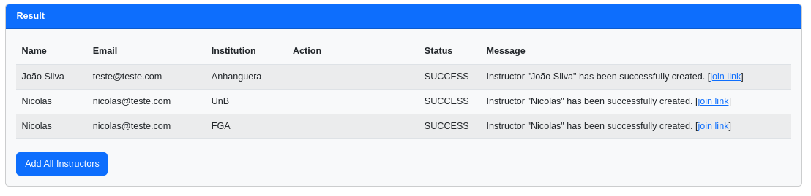
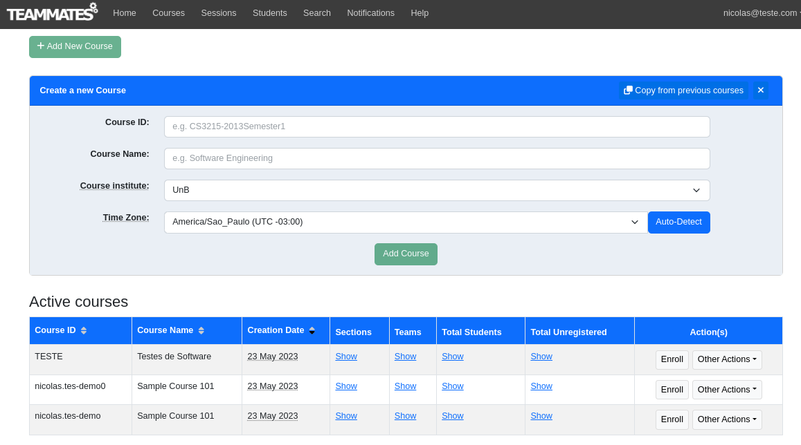
Testes Executados
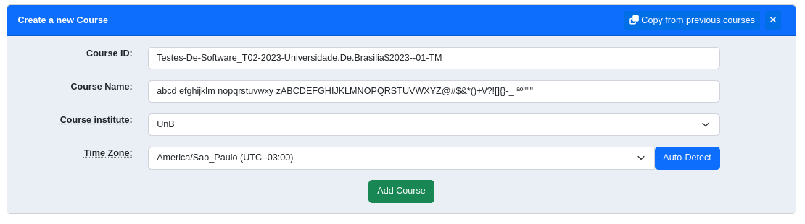
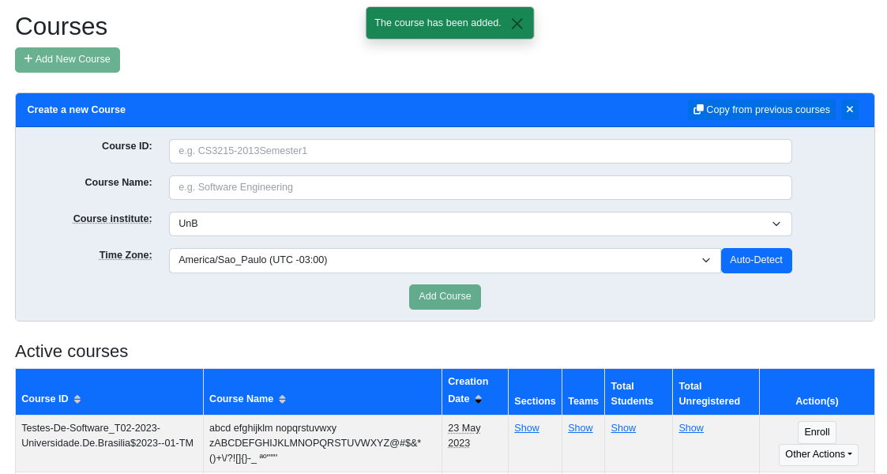
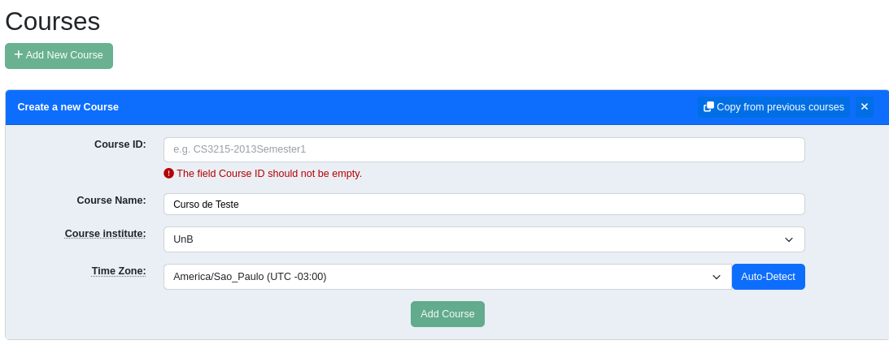
A validação do frontend não permite textos maiores do que 64 caracteres.
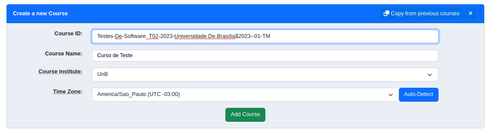
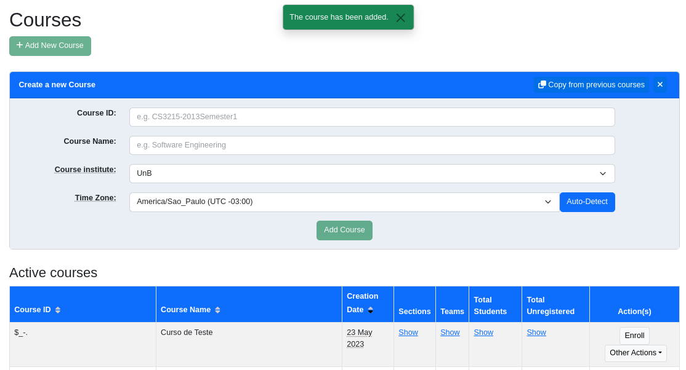
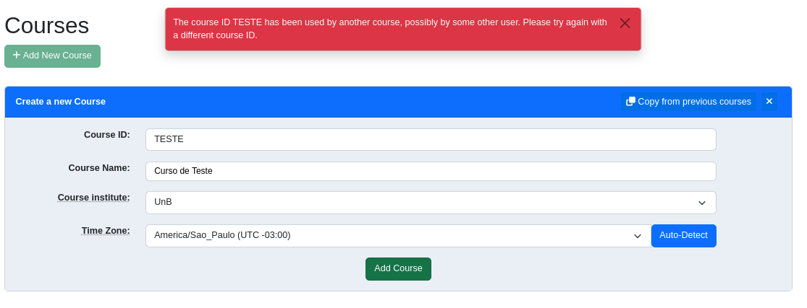
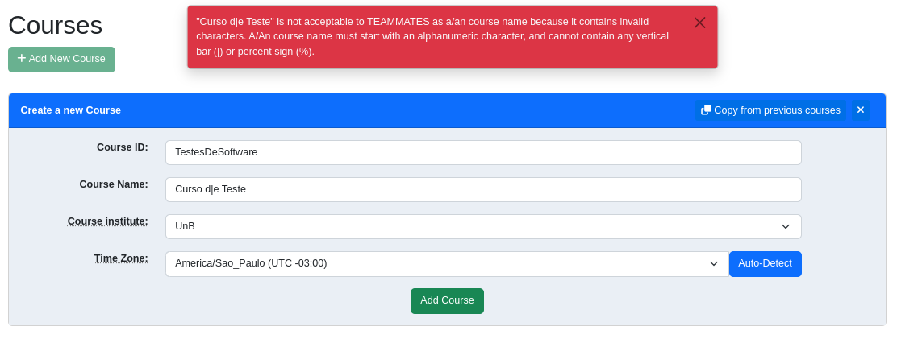
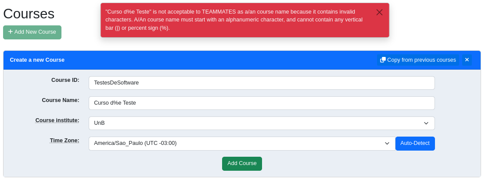
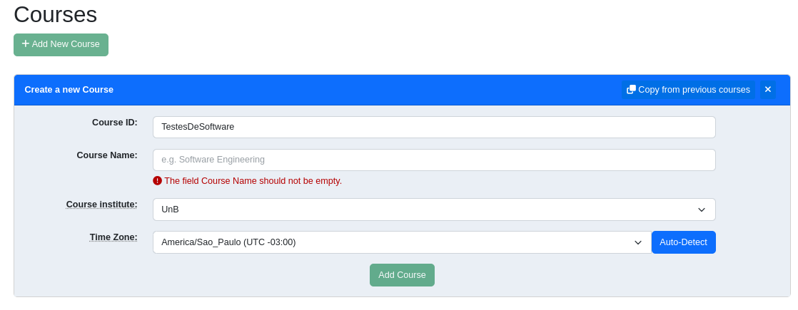
A validação do frontend não permite textos maiores do que 81 caracteres.
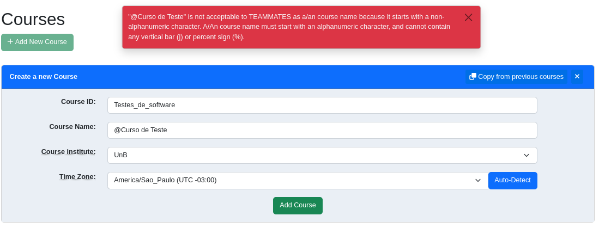
A validação do frontend não permite a escolha de outras instituições.
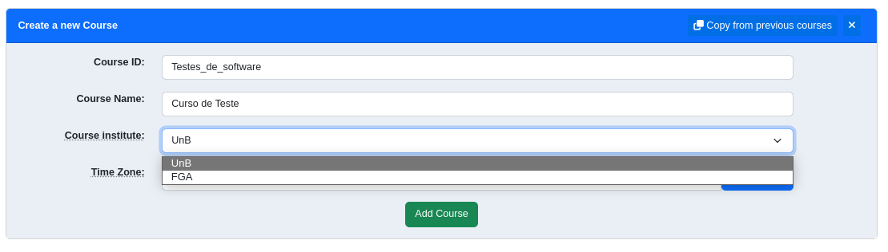
A validação do frontend não permite a escolha de outros fuso horários.
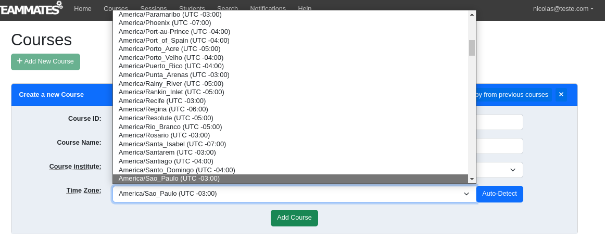
Resultados
| Caso de Teste | Resultado |
|---|---|
| A | Sucesso |
| B | Sucesso |
| C | Sucesso |
| D | Sucesso |
| E | Falha |
| F | Sucesso |
| G | Sucesso |
| H | Sucesso |
| I | Sucesso |
| J | Sucesso |
| L | Sucesso |
| M | Sucesso |
| N | Sucesso |
No caso de teste E esperava-se que o curso não fosse cadastrado, houve falha no teste já que o curso foi cadastrado.
Resumo
| Testes executados | Testes com sucesso | Taxa de sucesso |
|---|---|---|
| 14 | 13 | 92,85% |
Falhas Identificadas
Durante a execução dos testes a única falha encontrada foi no caso de teste E, quando foi permitido cadastrar um curso sem caracteres alfanuméricos em seu ID. Portanto, o resultado esperado foi encontrado em 13 dos 14 testes, um total de 92,85% dos testes. Durante a execução dos casos de teste também foi identificada uma funcionalidade ainda não presente no sistema, o cadastro de palavras acentuadas, mas levando em consideração que o idioma do sistema é inglês, essa funcionalidade não foi testada e não se mostra necessária.
Conclusão
Os casos de teste apontaram que as validações para os valores inseridos no cadastro de um curso funcionam adequadamente. A documentação dos requisitos do sistema não é clara em relação aos domínios de valores aceitos, portanto para a derivação dos casos de uso foram levados em consideração as restrições expressas nas mensagens de erro e o senso comum.